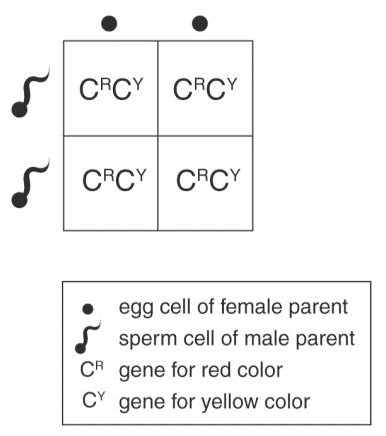
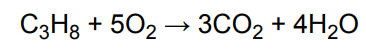
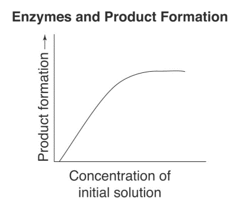
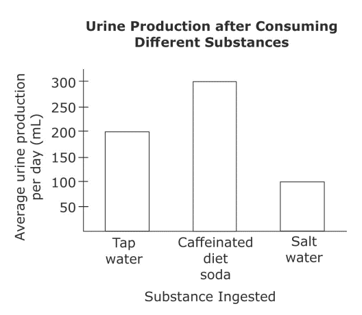

A gene is expressed when it is pure, meaning that it is expressed when both genes in a pair are alike. A hybrid pattern occurs when two genes in a pair are different, and in cases of incomplete dominance the two traits will blend together to make a new trait. Flower color in carnations follows an incomplete dominance pattern. When both genes in a pair are associated with the color red, then the plant produces red flowers. When both genes in a pair are associated with the color yellow, the plant produces yellow flowers. When a plant is hybrid, and has one gene associated with the color red and another associated with the color yellow, then the two traits blend to produce orange flowers. Below is a Punnett Square showing the results when a carnation with yellow flowers and a carnation with red flowers are crossed to produce offspring. Punnett Squares predict the likelihood of specific gene combinations occurring.
The balanced equation below represents the oxidation process for propane.
An enzyme speeds up a chemical reaction by interacting with an initial substance and making it easier for that substance to form a product. In most cases, an enzyme can interact with only one molecule of the initial substance at a time. The graph below shows the results of an experiment that measured the rate of product formation as the concentration of an initial substance was increased. A limited amount of the enzyme was present during the experiment.
An earthquake in California measures 4.0 on the Richter scale, and an earthquake in Taiwan measures 6.0 on the Richter scale.
A scientist conducts a study to determine the effects that certain substances have on those who suffer from polyuria, or excessive urine production. During a two-week period, the 500 volunteers participating in the study drink two liters of water per day, and do not consume any other liquids. During the next two-week period, the same 500 volunteers drink two liters of caffeinated diet soda per day, and do not consume any other liquids. During a final two-week period, the same 500 volunteers drink two liters of water containing a mild amount of salt per day. The scientist tracks each volunteer’s urine output each day. The volunteers all follow exactly the same diet in the first two-week period as they do in the second two-week period and in the third two-week period. The average daily urine output per volunteer for each of the two-week periods is shown below.
A scientist conducts a study to determine the effects that certain substances have on those who suffer from polyuria, or excessive urine production. During a two-week period, the 500 volunteers participating in the study drink two liters of water per day, and do not consume any other liquids. During the next two-week period, the same 500 volunteers drink two liters of caffeinated diet soda per day, and do not consume any other liquids. During a final two-week period, the same 500 volunteers drink two liters of water containing a mild amount of salt per day. The scientist tracks each volunteer’s urine output each day. The volunteers all follow exactly the same diet in the first two-week period as they do in the second two-week period and in the third two-week period. The average daily urine output per volunteer for each of the two-week periods is shown below.
A scientist conducts a study to determine the effects that certain substances have on those who suffer from polyuria, or excessive urine production. During a two-week period, the 500 volunteers participating in the study drink two liters of water per day, and do not consume any other liquids. During the next two-week period, the same 500 volunteers drink two liters of caffeinated diet soda per day, and do not consume any other liquids. During a final two-week period, the same 500 volunteers drink two liters of water containing a mild amount of salt per day. The scientist tracks each volunteer’s urine output each day. The volunteers all follow exactly the same diet in the first two-week period as they do in the second two-week period and in the third two-week period. The average daily urine output per volunteer for each of the two-week periods is shown below.
Geologists classify rocks in three main categories: igneous, sedimentary, and metamorphic. Igneous rock forms when melted rock cools and hardens. Below ground, igneous rock forms when melted rock known as magma cools in small pockets. Above ground, igneous rock forms when volcanoes erupt and spew lava that cools and hardens into igneous rock. Sedimentary rock forms when minerals or organic particles accumulate and settle in a specific place on the Earth’s surface or within a body of water. Metamorphic rock forms when existing rocks are transformed by heat and pressure, and as a result experience profound chemical and physical changes. A student discovers a rock that he hypothesizes may be igneous.
Scientific theory holds that convergent evolution occurs when different species independently evolve analogous structures, or features that may appear different, but perform the same function. Creatures evolve such structures in order to adapt to their environments. A scientist argues that bats and birds have analogous structures.
1. Based on the information in the graphic, which of the following is mostly likely to be true during a solar eclipse?
2. Which of the following is correct?
3. Which of the following best describes the results shown in the graph? As the concentration of the initial substance increased, the rate of product formation
4. According to the information in the passage, what is the ratio of the shaking amplitude of the earthquake in California to the shaking amplitude of the earthquake in Taiwan? You may use a calculator.
5. What is the dependent variable?
6. The data support which of the following conclusions?
7. The passage indicates that the volunteers followed the same diet during each two-week period of the study. Why was this important?
8. Which of the following supports the student’s hypothesis?
9. Based on the cladogram, unknown trait A is most likely ________.
10. Which of the following supports his argument?